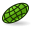

Warsztat Mesh obejmuje siatki trójkątów. Siatki są specjalnym typem obiektów 3D, złożonym z trójkątów połączonych przez ich krawędzie i narożniki (zwane także wierzchołkami).

Przykład obiektu siatki
Wiele aplikacji 3D używa siatek jako podstawowych obiektów 3D, jak sketchup, blender, maya czy 3d studio max. Ponieważ siatki są bardzo prostymi obiektami, zawierającymi tylko wierzchołki (punkty), krawędzie i (trójkątne) ściany, są one bardzo łatwe do tworzenia, modyfikowania, dzielenia, rozciągania i mogą być łatwo przenoszone, bez żadnych strat, z jednej aplikacji do drugiej. Ponadto, dzięki temu że siatki zawierają bardzo proste dane, aplikacje 3D mogą operować na bardzo dużej ich ilości beż żadnych problemów. Z tych powodów, siatki są często obiektami 3D w aplikacjach 3D do tworzenia filmów, animacji i obrazów.
Jednak w sektorze inżynierii siatki mają dużo ograniczeń: Są one bardzo "tępymi" obiektami, złożonymi tylko z punktów, linii i ścian. Są one tylko powierzchniami, nie mają informacji o masie, więc nie zachowują się jako lite bryły. W siatce nie ma automatycznego sposobu by stwierdzić czy dany punkt jest w środku czy na zewnątrz obiektu. To oznacza, że wszystkie operacje dla brył litych, jak dodawanie lub wycinanie, są trochę trudniejsze do uzyskania na siatkach i częściej zwracają błędy.
We FreeCADzie, jako aplikacji inżynierskiej oczywiście preferujemy bardziej inteligentne typy obiektów 3D, mogące przenosić więcej informacji, jak masa, zachowanie bryły litej, lub inne dostosowane parametry. Moduł siatki (mesh) został początkowo zbudowany by dostarczyć miejsce testowe, ale zdolność do odczytu, manipulacji i konwersji siatek także bardzo ważna dla FreeCADa. Bardzo często, w swojej pracy, otrzymujesz dane 3D w formie siatek. Możesz manipulować tymi danymi, analizować ją by wykryć błędów lub innych problemów, które przeszkadzają przed konwersją siatek do bardziej inteligentnych obiektów i ostatecznie konwertować je do bardziej inteligentnych obiektów utrzymywanych w Moduł Part.
Używanie modułu siatki (mesh)
Moduł siatki ma bardzo prosty interfejs, wszystkie funkcje zgrupowane są w menu Mesh. Obecnie najbardziej ważne operacje z siatkami to:
- Import siatek z kilku formatów plików
- Eksport siatek do kilku formatów plików
- Konwersja obiektów Części (Part) w siatki
- Analiza krzywizny, ścian i sprawdzenie czy siatki mogą być bezpiecznie skonwertowane do obiektów litych
- Odwracanie normalnych siatek
- Zamykanie dziur w siatkach
- Usuwanie boków w siatkach
- Łączenie, wydzielanie i przecinanie siatek
- Tworzenie prymitywów siatek, jak sześciany, kule, stożki czy walce
- Przecinanie siatek wzdłuż linii
To jest tylko kilka podstawowych operacji obecnych w module Siatki (Mesh). Operacje na siatkach mogą być wykonywane także przez skrypty.
The Mesh Workbench handles triangle meshes. Meshes are a special type of 3D object, composed of triangles connected by their edges and their corners (also called vertices).
An example of a mesh object
Many 3D applications use meshes as their primary type of 3D object, like sketchup, blender, maya or 3d studio max. Since meshes are very simple objects, containing only vertices (points), edges and (triangular) faces, they are very easy to create, modify, subdivide, stretch, and can easily be passed from one application to another without any loss. Besides, since they contain very simple data, 3D applications can usually manage very large quantities of them without any problem. For those reasons, meshes are often the 3D object type of choice for applications dealing with movies, animation, and image creation.
In the field of engineering, however, meshes present one big limitation: They are very dumb objects, only composed of points, lines and faces. They are only made of surfaces, and have no mass information, so they don't behave as solids. In a mesh there is no automatic way to know if a point is inside or outside the object. This means that all solid-based operations, such as addition or subtraction, are always a bit difficult to perform on meshes, and return errors often.
In FreeCAD, since it is an engineering application, we would obviously prefer to work with more intelligent types of 3D objects, that can carry more information, such as mass, solid behaviour, or even custom parameters. The mesh module was first created to serve as a testbed, but to be able to read, manipulate and convert meshes is also highly important for FreeCAD. Very often, in your workflow, you will receive 3D data in mesh format. You will need to handle that data, analyse it to detect errors or other problems that prevent converting them to more intelligent objects, and finally, convert them to more intelligent objects, handled by the Part Module.
Using the mesh module
The mesh module has currently a very simple interface, all its functions are grouped in the Mesh menu entry. The most important operations you can currently do with meshes are:
-
 Import Mesh: Import meshes in several file formats
Import Mesh: Import meshes in several file formats - Export Mesh: Export meshes in several file formats
-
 Create Mesh from shape: Convert Part objects into meshes
Create Mesh from shape: Convert Part objects into meshes - Harmonize Normals: Harmonize normals
- Flip Normals: Flip normals
- Fill Holes...: Fill up holes
- Close hole: Close holes in meshes
- Remove components...: Remove components of meshes
- Remove components by hand...: Remove components of meshes by hand
- Add triangle: Add triangle
- Smooth...: Smooth mesh
{kind=link}
{kind=link}
{kind=link}
{kind=link}
{kind=link}
- Analyze curvature, faces, and check if a mesh can be safely converted into a solid
- Evaluate & Repair mesh...: Evaluates and repairs meshes
- Face Info: Gives info on faces
- Curvature Info: Gives info on curvature
- Check solid mesh: Checks the solid if it can be converted to a mesh
- Boundings info...: Evaluates the bounding box of a mesh
{kind=link}
- Regular solid... Create mesh primitives, like cubes, cylinders, cones, or spheres:
- Create a mesh cube
- Create a mesh cylinder
- Create a mesh cone
- Create a mesh sphere
-  Create a mesh ellipsoid
- Create a mesh torus
{kind=link}
{kind=link}
{kind=link}
{kind=link}
{kind=link}
{kind=link}
{kind=link}
- Do Boolean operations with meshes
- Union: Does a union (fusion) on meshes
- Intersection: Does an intersection (common) on meshes
- Difference: Does a difference (cut) on meshes
- Merge: Merges meshes
- Select Mesh: Selects meshes
- Cut mesh: Cut meshes along a line
- Split Mesh: Splits meshes
- Make segment: Makes a segment
- Trim mesh: Trims meshes
- Trim mesh with a plane: Trims meshes with a plane
- Create mesh segments...: Creates mesh segments
- Curvature Plot: Creates a curvature plot
{kind=link}
{kind=link}
{kind=link}
-
 Preference ... Import Export
Preference ... Import Export
These are only some of the basic operations currently present in the Mesh module interface.
More mesh tools are available in the OpenSCAD Workbench.
But the FreeCAD meshes can also be handled in many more ways by scripting.
Links